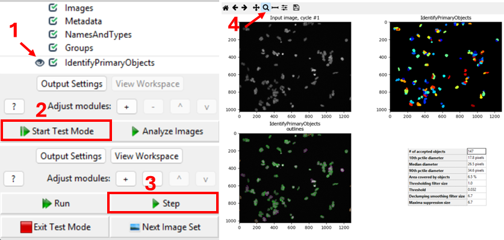
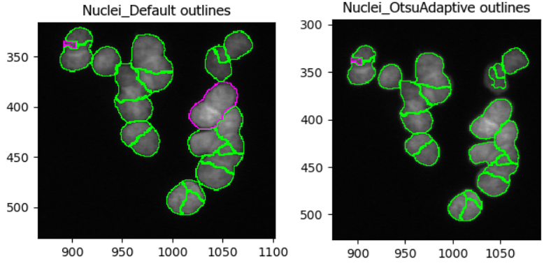
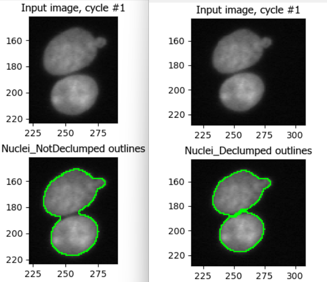

Identifying primary objects
Last updated on 2026-01-20 | Edit this page
Estimated time: 45 minutes
Overview
Questions
- How does CellProfiler identify objects in an image?
- Why do we usually start segmentation with nuclei?
- Which parameters matter most for good nucleus segmentation?
Objectives
- Understand what primary objects are in CellProfiler.
- Configure the IdentifyPrimaryObjects module to segment nuclei.
- Learn how to assess segmentation quality using the Test Mode viewer.
- Produce a nucleus object set suitable for downstream cell/feature analysis.
Introduction: why segment nuclei first?
In this episode, we will segment nuclei as our primary objects. In many microscopy assays, nuclei are an ideal starting point because they are:
- High contrast in a DNA channel (bright nuclei on a dark background), making them easier to separate from non-cell regions.
- Present in (almost) every cell, giving a reliable “anchor” object for counting cells and linking measurements.
- Typically compact and well-defined, which helps the segmentation algorithm succeed even when cell boundaries are faint.

Once nuclei are correctly identified, we can often use them to guide later steps like finding whole cells (secondary objects) or cytoplasm (tertiary objects), and to compute per-cell measurements.
In CellProfiler’s terminology: - Primary objects are detected directly from an image (here: nuclei from the DNA channel). - Secondary objects are grown out from primary objects (often whole cells). - Tertiary objects are derived from other objects (often cytoplasm = cell minus nucleus).
The IdentifyPrimaryObjects module
Add a new module via + Add → Object Processing → IdentifyPrimaryObjects.
You should now see a module where you need to specify: 1. which image to segment, 2. what to call the resulting objects, 3. how CellProfiler should separate touching nuclei, 4. what size and shape constraints to apply, 5. and (optionally) how to filter out artifacts.
Step 1: choose the correct input image
Set Select the input image to the DNA/nuclear stain
image (i.e. DNA, if you followed the steps in the previous episode).
Set Name the primary objects to be identified to
something descriptive like Nuclei.
Challenge: confirm you are using the correct channel
How can you quickly verify that you selected the DNA image (and not actin or tubulin)?
Using interactive test mode
One way to verify the image that is being segmented is to use CellProfiler’s interactive test interface. To do this, first make sure the eye symbol next to the module is enabled (dark). If it is a disabled (light grey), click on the eye (step 1 in the figure below). Second, start test mode and run the first step. A new CellProfiler window will open, that shows the image that is being segmented next to the segmentation results. Do the objects in the top left image look like nuclei? You can zoom in using the magnifying glass (step 4 in figure). 
Nuclei should show as compact, round, and high-contrast objects, as in the figure above. If you get a different result, make sure to double-check your settings for the segmentation and metadata modules.
Step 2: set an expected nucleus diameter (in pixels)
CellProfiler needs an approximate size range for objects. Set:
- Typical diameter of objects, in pixel units (Min, Max) to a range that matches your nuclei.
This is one of the most important parameters. If the minimum is too small, you may pick up noise; if the maximum is too small, large nuclei may be split.
Challenge: estimate nucleus size
Using a representative image, estimate a reasonable nucleus diameter range.
To estimate nuclei size range, it is good to measure the diameter of a few nuclei in a representative image. We can do so by using the measure tool in CellProfiler. From the test interface used in the previous challenge, we can access the measure tool (step 1 in figure). Then, by clicking and dragging the cursor (2), we can measure the length in pixels, which is displayed in the bottom right of the window (3). By repeating this process for a few nuclei, ideally across a few images, we can gain a good intuition for typical nuclei diameters.
Note: in bigger experiments, this should be repeated with different experimental conditions to make sure we are not biasing analyses.
Step 3: choose a thresholding strategy (foreground vs background)
CellProfiler separates nuclei (foreground) from background using a threshold. In the advanced settings of IdentifyPrimaryObjects, you have the choice of two threshold strategies:
- Global thresholding (one threshold per image)
- Adaptive thresholding (threshold varies across the image)
Set the thresholding method appropriate for your images. If illumination is uneven or background varies strongly, adaptive methods often perform better.
Challenge: compare thresholding options
Run the module in Test Mode on 2–3 images and compare at least two thresholding settings. Look out for things like
- Nuclei being merged or split (over- and undersegmentation)
- Background being included in foreground
Which setting best matches what you consider nuclei?
Note that CellProfiler colors nuclei it will remove in subsequent analyses in purple outlines. These nuclei are removed because they either do not fit the set diameter range, or because they are touching the border. Nuclei that will be kept are outlined in green.
In this dataset, as if often the case, it is difficult finding perfect settings! Ideally, one spends a significant portion of time optimizing the settings to make sure that results are biologically representative of cells. In the figure below, you can see that changing the segmentation strategy and method to “Adaptive” and “Otsu”, respectively, may not make much of a difference. But results of the segmentation with adaptive Otsu show that some pixels that are parts of nuclei are discarded (top right). Note that the result will also be affected by the settings we will change next. 
Step 4: declump touching nuclei
Nuclei often touch or overlap, particular if many cells were seeded. While a z-stack of images can help distinguish which nuclei goes where, due to the increased imaging time needed and more complex downstream analysis not all experiments involve z-stacks. Instead, we can instruct CellProfiler to separate clumped nuclei using information about nuclei shape and intensity.
While doing so, we need to make sure that one nucleus corresponds to one “object”.
Challenge: tune declumping
Find an image region with several touching nuclei. (In the sample data, the image of cells treated with cytoD has more clumped nuclei.) Adjust declumping parameters until most nuclei are separated correctly.
As before, it is not trivial to find ideal declumping settings. We can get satisfactory results using “Shape” for both, distinguishing clumped objects and to draw dividing lines here, but not that this will differ for each dataset and should be carefully tested.
This figure shows the impact of not using declumping at all (left) vs declumping using “Shape” (right). 
Step 5 (optional): filter cells
Depending on your dataset, you may need to exclude: - tiny bright specks (dust/hot pixels), - very large blobs (out-of-focus regions), - edge artifacts.
Within IdentifyPrimaryObjects, you can often handle some of this using: - size constraints (min/max diameter), - smoothing of the image before thresholding, - discard objects touching the image border (if appropriate).
Placeholder: Decide whether learners should remove border-touching objects in your course and justify it (e.g. do partial nuclei matter for your analysis?).
Challenge: should we exclude border objects?
With your neighbor, discuss whether nuclei touching the image border should be kept or removed for your research question formulated in the previous section, e.g. “does cytochalasin D induce a morphological change in MCF7 cells?”
In most cases we advise removing cells touching the image border, because when we move to measuring cell characteristics they will represent outliers. For example, they may appear as disproportionately small cells because they were cut off. This does not represent biological changes but technical parameters, which we are not interested in during the analysis.
Conclusions
Segmentation is rarely perfect, but it should be fit for purpose. A good nucleus segmentation typically has:
- Most nuclei detected (few false negatives)
- Few background objects detected (few false positives)
- Reasonable splitting of touching nuclei
- Consistent performance across conditions (e.g. DMSO vs treatment)
Now that we have Nuclei objects, we can detect whole
cells, an important step towards measuring features per cell! Therefore,
in the next episode we will use the nuclei as anchors to find cell
boundaries.
Help
Did you get stuck with one of the steps? Download a working version of the pipeline here:
If you are using Firefox, you have to right click the button and select “Save Link As…”.
If you like, you can compare this pipeline to yours. To do so, first open a new CellProfiler window. Then, import this pipeline in CellProfiler by clicking on File > Import > Pipeline from File.
- Nuclei are often the best primary objects because they have high contrast and exist in nearly all cells.
- The most important parameters in IdentifyPrimaryObjects are object size, thresholding method, and declumping.
- Always test segmentation on multiple images and across experimental conditions.